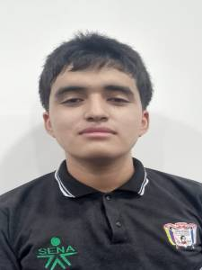
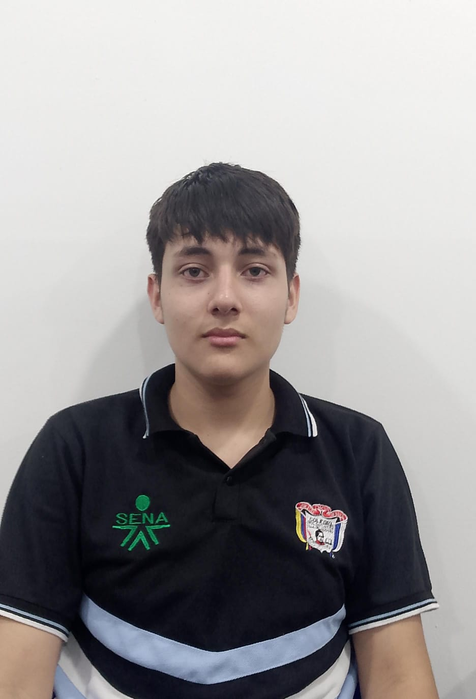
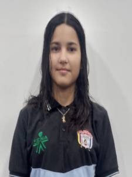

Este proyecto fue desarrollado por estudiantes de 11 de la modalidad técnico en sistemas de la Institución Educativa Colegio General Santander, comprometidos con la excelencia académica y con el desarrollo de estrategias pedagógicas innovadoras que fortalezcan el proceso de enseñanza y aprendizaje del idioma inglés. En el marco de este compromiso, hemos diseñado un Objeto Virtual de Aprendizaje (OVA) dirigido a los estudiantes de grado décimo, con el propósito de apoyar el desarrollo de sus competencias comunicativas de manera integral. Este recurso educativo ha sido estructurado cuidadosamente para ofrecer una experiencia de aprendizaje significativa, combinando contenidos teóricos con ejercicios prácticos, actividades interactivas y material audiovisual. Nuestra intención es facilitar el acceso a herramientas didácticas claras, dinámicas y contextualizadas que promuevan la comprensión, el uso adecuado del idioma y el aprendizaje autónomo. Asimismo, este proyecto refleja nuestro interés por aportar a la comunidad educativa desde un enfoque colaborativo, creativo y reflexivo, reconociendo el valor de la tecnología como medio para enriquecer los entornos de aprendizaje y contribuir al mejoramiento de la calidad educativa en nuestra institución.
Quienes Somos
Integrantes
|  |
Nombres: Miguel Santiago Apellidos: Bottia Corredor Su función principal dentro del desarrollo del Objeto Virtual de Aprendizaje (OVA) consiste en ejecutar la estructura visual y organizativa previamente definida por el docente orientador del proyecto. A partir de las directrices pedagógicas establecidas, Miguel Santiago se encarga de diseñar la interfaz del OVA, organizando los contenidos de forma clara, funcional y visualmente coherente. Esto implica construir una arquitectura digital amigable que facilite la navegación por las distintas secciones del recurso, asegurando que cada componente esté correctamente ubicado según su propósito educativo. |
|  |
Nombres: Eder Yesid Apellidos: Lopez Mendez Desempeña la función de productor audiovisual dentro del OVA, siendo el encargado de crear los diez videos educativos que acompañan el contenido del recurso. Su labor se enfoca en traducir los objetivos pedagógicos propuestos por el docente en materiales visuales comprensibles, dinámicos y motivadores para los estudiantes de grado décimo. A partir de los guiones y diálogos diseñados con base en los contenidos investigados, Yesid realiza la grabación, edición y montaje de cada video, cuidando aspectos técnicos como la calidad de imagen, sonido, ritmo y claridad de exposición. |
|  |
Nombre: Eylin Mariana Apellidos: Gutierrez Contreras Tiene a su cargo la investigación, selección y adaptación del contenido teórico necesario para el desarrollo de las actividades del OVA. A partir de los temas asignados por el docente, Mariana se dedica a consultar fuentes confiables y pertinentes que permitan sustentar cada unidad del recurso, asegurando la calidad y validez de la información recopilada. Su función no se limita a la búsqueda de datos, sino que también implica analizar y reorganizar los contenidos de manera que resulten accesibles y significativos para los estudiantes de grado décimo. |
Licencia: licencia de software libre GPL